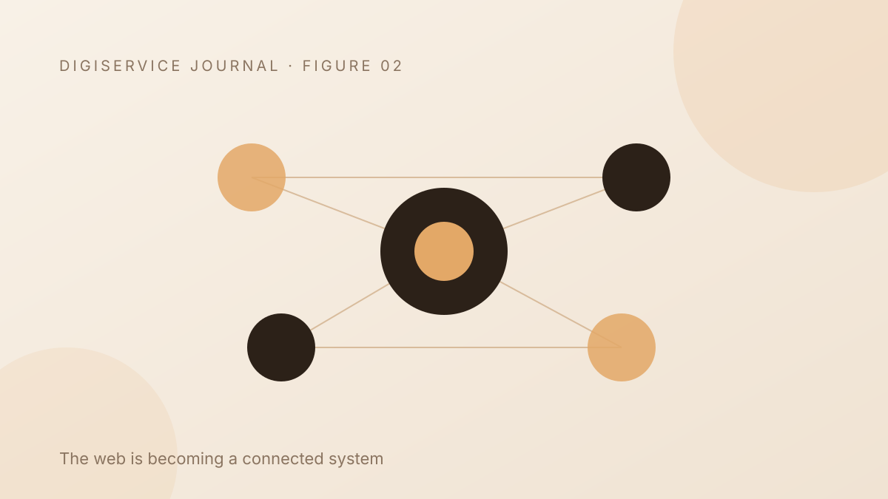

The future of web development in Pakistan is rapidly evolving, driven by technological advancements and increasing digital adoption. Emerging trends like AI integration, mobile-first design, and e-commerce growth are transforming how businesses and developers create innovative, user-friendly web solutions that meet the demands of a dynamic market.
What is Web Development?
Web development is the comprehensive process of designing, building, and maintaining websites and web applications that operate over the internet. It covers everything from creating simple, static web pages to developing complex, interactive platforms that support a wide range of functions such as e-commerce, social networking, content management, and online services.
At its core, web development involves writing code using various programming languages and utilizing frameworks and tools to create websites that are visually appealing, highly functional, and user-friendly. It also includes ensuring that websites perform well across different devices and browsers, load quickly, and maintain high security standards.
Web development is typically divided into three main parts:
- Front-End Development – This focuses on what users see and interact with on the website (HTML, CSS, JavaScript).
- Back-End Development – This handles the server-side logic, databases, and APIs that power the front-end (e.g., PHP, Python, Node.js).
- Full-Stack Development – This combines both front-end and back-end skills to build complete web solutions.

The Three Main Areas of Web Development
1. Front-End Development
Front-end development focuses on the client side—the part of the website users directly interact with. It involves building the visual layout, design, and interactive elements of a website. Developers use languages like:
- HTML (HyperText Markup Language) to structure content,
- CSS (Cascading Style Sheets) to style the website, including colors, fonts, and layouts,
- JavaScript to add interactivity, animations, and dynamic content.
Front-end frameworks and libraries such as React, Angular, and Vue.js are commonly used to streamline development and create responsive, mobile-friendly interfaces.
2. Back-End Development
Back-end development manages the server side of a website—the part that users don’t see but that powers the functionality behind the scenes. It includes working with servers, databases, and application logic. Back-end developers build and maintain:
- Databases to store and retrieve data (e.g., MySQL, MongoDB),
- Server-side code to handle user requests, process data, and interact with databases,
- APIs (Application Programming Interfaces) to connect front-end elements with backend systems or third-party services.
Common back-end programming languages include PHP, Python, Ruby, Java, and Node.js.
3. Full-Stack Development
Full-stack developers have skills in both front-end and back-end development. They are capable of building complete web applications from designing the user interface to managing the server and database. This versatility is valuable in small teams or projects where a single developer can handle the entire web development lifecycle.
The Importance of Web Development
Web development is a critical pillar in the digital age, as it forms the backbone of how businesses, organizations, and individuals present themselves online and interact with their audience. Skilled web developers are responsible for creating websites and applications that not only look good but also function reliably and securely, ensuring a seamless experience for users.
1. Functionality
A well-developed website must be fully functional, meaning all its features and components work correctly without glitches or errors. This includes forms, shopping carts, login systems, multimedia content, and interactive elements. If these features fail, users may become frustrated, lose trust, and leave the site, resulting in lost business opportunities and damaged reputations. Developers rigorously test and debug websites to maintain smooth operations.
2. Speed and Performance
Website speed significantly impacts user experience and search engine rankings. Slow-loading pages lead to higher bounce rates, where visitors leave before the content even loads. Developers optimize images, streamline code, and implement caching and content delivery networks (CDNs) to ensure pages load rapidly. Fast websites keep users engaged, encourage longer visits, and improve conversion rates.
3. Security
In an era of increasing cyber threats, web development plays a vital role in protecting sensitive user data such as personal information, payment details, and login credentials. Developers implement security best practices, including SSL certificates, data encryption, secure authentication, and regular updates to safeguard websites from hacking, malware, and data breaches. Secure websites build user confidence and comply with legal regulations like GDPR.
4. User-Friendliness and Accessibility
Creating a user-friendly website means designing intuitive navigation, clear layouts, and interactive elements that make it easy for visitors to find information and complete tasks. Additionally, accessibility ensures that websites are usable by people with disabilities, complying with standards such as the Web Content Accessibility Guidelines (WCAG). Responsive design is crucial so that websites function smoothly across all devices — desktops, tablets, and smartphones — catering to the diverse ways people access the internet today.
Why Web Development Matters for Businesses and Organizations
In today’s digital-first world, web development is foundational for establishing a strong online presence. A professional, efficient, and well-maintained website helps businesses:
- Build credibility and brand identity by presenting a polished, trustworthy image.
- Reach and engage customers globally, breaking geographic barriers.
- Provide valuable services or information 24/7 without the limitations of physical locations.
- Drive sales and revenue growth through e-commerce and lead generation.
- Stay competitive by adapting to evolving technology trends and customer expectations.
Without effective web development, organizations risk losing market share, failing to connect with their audience, and missing opportunities for innovation and growth.
The Role of Web Development in the Future
The role of web development in the future will be even more vital as the world becomes increasingly digital. With growing reliance on online platforms for education, business, healthcare, and entertainment, web development will continue to shape how we interact, shop, learn, and work.
Future trends like artificial intelligence, progressive web apps (PWAs), voice search, and increased mobile usage will drive the need for more advanced, responsive, and intelligent web solutions. Web developers will play a key role in building secure, fast, and user-friendly digital experiences that meet the evolving needs of users and businesses.
The Future of Web Development for the Growth of Businesses
The future of web development is poised to play a critical role in driving business growth as the digital landscape evolves rapidly. With more consumers and companies moving online, having a robust, innovative, and user-friendly web presence is no longer optional but essential for staying competitive.
Advanced Technologies Driving Growth
Emerging technologies such as Artificial Intelligence (AI), Machine Learning, and chatbots are increasingly integrated into websites to provide personalized user experiences. These innovations enable businesses to understand customer preferences better, offer tailored recommendations, and automate customer service, thereby boosting engagement and satisfaction.
Mobile-First and Progressive Web Apps (PWAs)
With the majority of internet users accessing websites via mobile devices, web development is shifting towards mobile-first design strategies. Progressive Web Apps combine the best of web and mobile apps, offering faster load times, offline capabilities, and app-like experiences without requiring installation. This approach helps businesses reach wider audiences and increase user retention.
Enhanced Security and Performance
As cyber threats grow more sophisticated, web developers focus heavily on implementing advanced security measures to protect sensitive customer data. Faster loading speeds, optimized code, and efficient backend systems ensure seamless user experiences, reducing bounce rates and improving search engine rankings.
Global Reach and Scalability
Custom web development enables businesses to scale their online platforms easily and expand into global markets. Multi-language support, localization, and scalable architectures ensure websites can grow alongside business demands and cater to diverse customer bases.
Demand for Web Development in the Future
The demand for web development is expected to grow significantly in the coming years as businesses and individuals increasingly rely on online platforms for communication, commerce, education, and entertainment. With the rapid digital transformation accelerated by advances in technology and changing consumer behaviors, websites and web applications remain critical tools for reaching and engaging audiences.
As technologies like artificial intelligence, the Internet of Things (IoT), and augmented reality become more integrated into everyday digital experiences, the complexity and scope of web development projects will expand, requiring skilled developers to build innovative and adaptive solutions. Additionally, the rise of mobile internet usage and the need for responsive, fast-loading, and secure websites will keep web development in high demand.
Moreover, small businesses, startups, and large enterprises alike will continue investing in custom web solutions to stand out in competitive markets, enhance user experience, and improve operational efficiency. Overall, the future holds abundant opportunities for web developers as the digital economy grows and evolves.
1. Progressive Web Apps (PWAs)
PWAs offer a seamless user experience by combining the best features of web and mobile applications. They provide offline access, push notifications, and faster load times, making them ideal for Pakistan’s mobile-first audience.0
2. Voice User Interfaces (VUIs)
With the rise of voice-activated devices, integrating VUIs into websites enhances accessibility and user engagement. This trend is particularly relevant in Pakistan, where diverse languages and dialects can be accommodated through voice interactions .
3. No-Code and Low-Code Development
Platforms like Web flow and Bubble empower individuals and small businesses to create websites without extensive coding knowledge. This democratization of web development is fostering innovation across Pakistan’s entrepreneurial landscape.
4. Web3 and Blockchain Integration
The adoption of decentralized technologies is gaining momentum. Web3 and blockchain offer enhanced security and transparency, which are increasingly important for Pakistani businesses dealing with digital transactions and data privacy.
5. Cybersecurity Emphasis
As cyber threats become more sophisticated, Pakistani web developers are prioritizing robust security measures. Implementing AI-driven threat detection and zero-trust security models is becoming standard practice.
6. AI-Powered Development Tools
Artificial Intelligence is streamlining web development processes through automation and intelligent design suggestions. These tools are enhancing efficiency and enabling developers in Pakistan to focus on more complex tasks.
7. Mobile-First and Responsive Design
Given the high mobile internet usage in Pakistan, designing websites that are mobile-first ensures better user engagement and accessibility across various devices.
8. Augmented Reality (AR) Experiences
AR is transforming user interactions by providing immersive experiences directly through web browsers. This technology is being utilized in sectors like retail and education within Pakistan to enhance customer engagement.
9. Remote Work and Freelancing Growth
The shift towards remote work has expanded opportunities for Pakistani web developers. Freelancing platforms are thriving, allowing developers to work with international clients and contribute to the global digital economy. Tech Buzz
10. Government Initiatives and Digital Policies
Programs like the e-Rozgaar initiative are equipping Pakistani youth with digital skills, including web development. Such government-backed programs are crucial in fostering a skilled workforce ready to meet the demands of the evolving web development sector.
Staying abreast of these trends is essential for businesses and developers aiming to thrive in Pakistan’s dynamic digital environment. Embracing these innovations will not only enhance user experiences but also drive growth and competitiveness in the market.
For professional assistance in implementing these web development trends, explore our Home Page, review our Pricing options, or view our Project Portfolio to see our successful implementations.